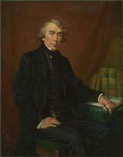
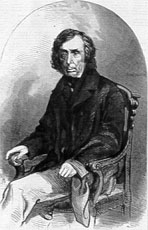

|
Roger
Brooke Taney
Early
Life
Taney was born of a wealthy slave-owning family of tobacco farmers.
He was admitted to the bar in 1799 and as a Federalist served (1799–1800)
one term in the Maryland house of delegates. He temporarily broke
with the Federalist leadership over the party’s opposition
to the War of 1812, but he gained control of the Federalists in
Maryland and in 1816 was elected to a five-year term in the state
senate. Having built up a large practice, he moved (1823) from Frederick
to Baltimore.
In 1824 he permanently abandoned the Federalists to support Andrew
Jackson. President Jackson appointed (1831) Taney to the post of
Attorney General to assist in the struggle with the Bank of the
United States. Taney wrote much of Jackson’s message vetoing
(1832) the act that rechartered the bank, and, when Louis McLane
and William J. Duane refused to withdraw federal funds from the
bank, Taney was appointed (1833) Secretary of the Treasury and effected
the withdrawal.
Chief
Justice
The
Senate, incensed by Taney’s actions as Secretary of the Treasury,
refused in 1835 to ratify his nomination as an Associate Justice
of the Supreme Court, but the following year, somewhat changed in
membership, the Senate ratified his appointment as Chief Justice.
In the Charles River Bridge Case (1837) Taney declared that a state
charter of a private business conferred only privileges expressly
granted and that any ambiguity must be decided in favor of the state.
His opinion outraged conservatives, who were opposed to any modification
of the view that charters issued by states are inviolable, a view
established by Taney’s predecessor, John Marshall, in the Dartmouth
College Case (1819).
Taney felt that the police power of a state entitled it to make
reasonable regulatory laws even if they appeared to override provisions
of the U.S. Constitution; thus, he held that, although Congress
alone had the power to regulate interstate commerce, a state might
exclude a corporation organized elsewhere. In sustaining fugitive
slave laws, however, Taney denied to free states the power of refusing
obedience to federal statutes requiring the surrender of escaped
slaves.
Taney’s
support of the slavery laws was most clearly expressed in the Dred
Scott Case (1857). Here he held that slaves (and even the free descendants
of slaves) were not citizens and might not sue in the federal courts,
and that Congress could not forbid slavery in the territories of
the United States. Opposition to the second holding was furiously
expressed by the Republicans, and when Lincoln became President
he considered Taney an arch foe. In the Civil War, Taney in vain
ruled against Lincoln’s suspension of the writ of habeas corpus
(see Merryman, ex parte). There was much antipathy to Taney at his
death, but there has been a gradual increase in appreciation of
his contributions to constitutional law.
Taken
From: The Columbia Encyclopedia, Sixth Edition. 2001.
For
more information on Roger Brooke Taney, Click
Here, to view history taken from "Historic
Frederick"
by Colonel John R. Holt and "A
Textbook History of Frederick County"
by Paul and Rita Gordon
Top
|
 |